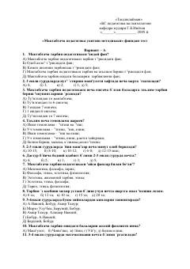

MPMaktabgacha pedagogika fanidan bilimni baholovchi testlar to'plami.
Ushbu qo'llanma maktabgacha ta'lim pedagogikasi va uni o'qitish metodikasi fanidan bilimlarni sinovchi test savollarini o'z ichiga oladi. Testlar turli variantlarda tuzilgan bo'lib, talabalar va o'qituvchilar uchun mustaqil tayyorgarlik ko'rishda yordam beradi.